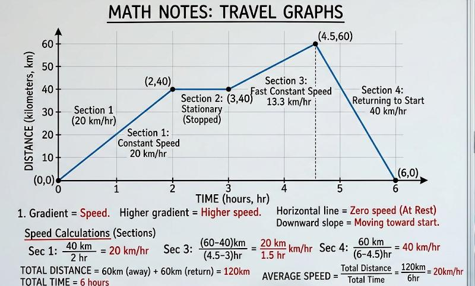

• X-axis: Time (e.g., seconds, minutes, hours). • Y-axis: Distance from a starting point (e.g., meters, kilometers).
• Flat Horizontal Line: The object is stationary (stopped). • Straight Diagonal Line: The object is moving at a constant speed. • Steeper Line: The faster the object is moving. • Downwards Line: The object is moving back toward the start.
• Speed: The gradient (slope) of the line represents the speed. • Formula: $\text{Speed} = \frac{\text{Distance}}{\text{Time}}$ • Average Speed: $\frac{\text{Total Distance}}{\text{Total Time}}$
Note: These are different! • Horizontal Line: Constant speed (not stopped). • Diagonal Line: Acceleration or deceleration. • Area under the graph: Represents the total distance traveled.
Here is an example of a Travel Graph:
